Хабр
Geektimes
Тостер
Мой круг
Фрилансим

Тостер
Задать вопрос
Войти на сайт
Все вопросы
Все тэги
Пользователи
САМОЕ ИНТЕРЕСНОЕ ЗА 24 ЧАСА
Some QUESTION 1
Some QUESTION 5
Some QUESTION over9000
Some Some !
Some thing about cats dogs and shit
Все вопросы
Новые вопросы
Интересные
Без ответа
Сложность
1С-Битрикс
Простой
Какие есть способы автоматизировать тестирование верстки?
9 подписчиков
20 часов назад
579 просмотров
1С-Битрикс
Простой
Какие есть способы автоматизировать тестирование верстки?